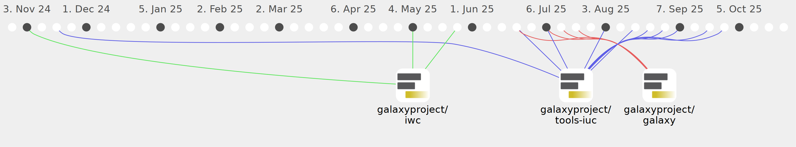

Smeds

Commits all-time: 76
Commits last year: 73

(58)
- ceb37d9
- e238859
- 771943a
- e2d957a
- 4ed3128
- 479a6e0
- 5997d89
- f05669f
- 93ed941
- b55434f
- bb284d9
- c0fe0ff
- c8b045a
- b921bb9
- eaee105
- 04879b0
- 7b715e7
- a7612b0
- 0061045
- 69da6bb
- f1753bb
- 13096b1
- 9672704
- e75b467
- 082c797
- f2557b2
- 51b7e0f
- dccd24b
- 0de6549
- b9853a3
- c02076a
- 56c3670
- 27bb723
- 0ef5412
- b40d265
- aee371a
- d792fa7
- 2fa5e99
- 236ee28
- eceb4b3
- ff18f7a
- d054597
- d1c6bfc
- 3b4d4d3
- da17b42
- 09e4b36
- 4882bea
- e45cf3d
- c34747c
- 21c1b57
- 8d0b57f
- 13518c2
- cfc2c1a
- 991c03c
- 9d4ad54
- 6083935
- 45c03ff
- 0d0d172
(11)
(4)